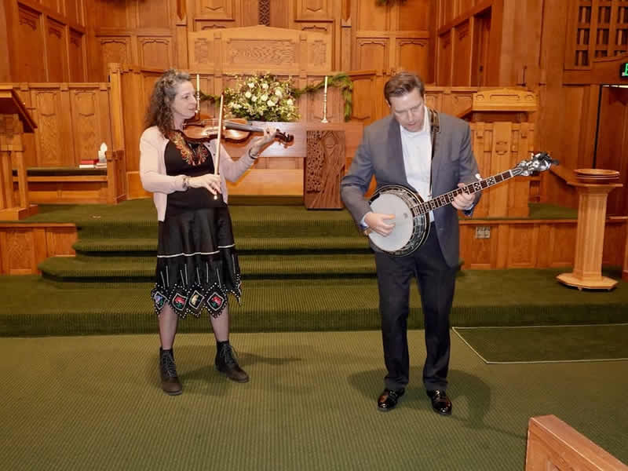

Music Ministry
Music is how we worship.
From our Chancel Choir to the handbell ensemble to our Summer Concert Series, music is woven into the life of FCCW. You don't need to be a professional — just a willing voice or pair of hands.



01
Chancel Choir
Our senior choir sings every Sunday during the school year and performs special concerts throughout the year. Rehearsals are Thursday evenings. All voice parts welcome.
02
Handbell Ensemble
A beloved tradition at FCCW, our handbell choir brings a unique and joyful sound to worship. No prior handbell experience required — just a love of rhythm and teamwork.
03
Summer Concert Series
A beloved North Shore tradition: free summer concerts in Fellowship Hall featuring local and regional musicians across jazz, folk, classical, and world music.